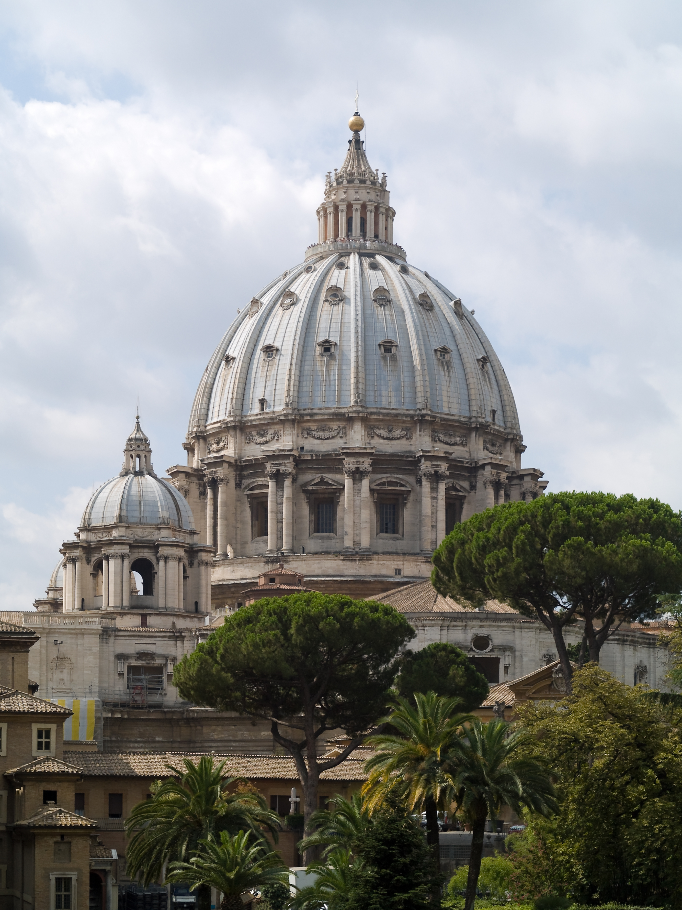

Software Architecture
Michelangelo’s Architectural Feat: A Case Study of St. Peter’s Basilica Dome for Modern Software Architecture

In 1546, at age 71, Michelangelo took over St. Peter’s Basilica in Rome. The project had already dragged on for 40 years across multiple architects, accumulating sprawling, conflicting layouts and structural compromises.
His first architectural move wasn't adding more ornament. It was radical simplification.
He stripped away fragmented additions, unified the floor plan around four massive load-bearing piers, and designed a soaring double-shell dome that still defines Rome’s skyline today.
Here are 4 timeless lessons from St. Peter’s Basilica that apply directly to modern software and enterprise architecture:
1. Ruthless Simplification Over Legacy Bloat
Before Michelangelo, St. Peter’s suffered from decades of competing visions—the architectural equivalent of technical debt and feature creep. He consolidated the design into one cohesive, central structural concept.
Software takeaway: Great architecture isn't about adding more microservices, tools, or abstractions. Sometimes the highest-leverage move is retiring accidental complexity and restoring a clear core domain boundary.
2. Respect Load Paths & Failure Modes
A masonry dome spanning over 40 meters exerts enormous outward thrust. Michelangelo engineered a double-shell structure—an inner load-bearing hemisphere and an outer profile—reinforced with iron tension chains embedded around the base to contain lateral forces.
Software takeaway: Understand where pressure builds in your system before it cracks under peak traffic. Backpressure, rate limiting, circuit breakers, and clear data partitioning are our modern tension chains.
3. Separation of Concerns (Inner vs. Outer Shell)
By separating the structural inner shell from the weather-facing outer shell, Michelangelo solved two distinct engineering problems without overloading a single layer.
Software takeaway: Decouple your core transactional engine from edge presentation, API gateways, and analytical read models. When each layer has one clear responsibility, the whole system scales and evolves cleanly.
4. Unify the System Around a Single Vision
Michelangelo didn't design walls, ribs, and windows in isolation—he treated the building as a single living organism where every component carried weight and served the whole.
Software takeaway: Microservices and distributed teams fail when services optimize locally at the expense of end-to-end reliability. Architecture governance exists to ensure every service reinforces system-wide resilience, security, and business outcomes.
Centuries later, the tools have changed from travertine marble and iron chains to Java, Kafka, and cloud-native infrastructure—but the fundamentals of enduring architecture remain the same: clarity of structure, respect for constraints, and courage to simplify.
#SoftwareArchitecture #SystemDesign #SolutionArchitecture #EngineeringLeadership #CloudNative #LegacyModernization #TechLeadership